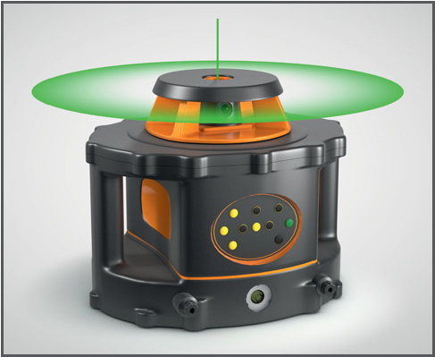

Beim Umgang mit Baulasern (Rotationslaser, Kreuzlaser) kann es zu Augenverletzungen, bis hin zur Erblindung kommen.

Allgemeines
Bereitstellung
Lasereinrichtungen sind hinsichtlich der von ihnen ausgehenden Gefährdung in Laserklassen eingestuft.
Grüne Baulaser der Klasse 2 sind gut sichtbar und Augenverletzungen sind unwahrscheinlich.
Baulaser der Klasse 3R, bei denen Augenverletzungen möglich sind, lassen sich auf Baustellen nur sicher betreiben, wenn ein direkter Blick in den Laserstrahl für alle Beteiligten unwahrscheinlich ist.
Eine wirksame, erfolgreiche Unterweisung für alle auf der Baustelle ist oft nur schwer zu gewährleisten
Schutzmaßnahmen
Bereitstellung
Laser nie auf Personen richten und nie selbst in den Strahl sehen.
Im Ernstfall Augen schließen und Kopf bewusst aus dem Strahl drehen.
Unterweisung durchführen, über einen ggf. notwendigen Arztbesuch nach Blendung z. B. bei Laserklasse 3R informieren.
Nutzung des Baulasers durch Unbefugte verhindern, Zugangsbereich absperren.
Für Justierarbeiten, wenn möglich, die Leistung verringern und ggf. eine Justierbrille benutzen.
Ab Laserklasse 3R einen Laserschutzbeauftragten (LSB) mit nachgewiesener Sachkunde schriftlich bestellen. Der LSB macht konkrete Vorgaben für den sicheren Betrieb des Lasers.
Bei Einsatz optischer Geräte (Theodolit) kann ein LSB auch in den niedrigen Laserklassen 1M und 2M notwendig sein.
Bei Einsatz von Lasern der Klasse 3B sind ggf. (nach Vorgabe des LSB) auch Hautschutzmaßnahmen und Explosionsschutzmaßnahmen zu berücksichtigen.
Reparaturen an Baulasern nur vom Hersteller oder autorisierten Fachwerkstätten ausführen lassen.
Weitere Informationen: Betriebssicherheitsverordnung
Verordnung zum Schutz der Beschäftigten vor Gefährdungen durch künstliche optische Strahlung
TROS Laser
TRBS 2152 Teil 3